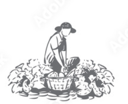

If you want to start the journey, press the button |
Our expert agricultural consultants are dedicated to providing personalized farming strategies tailored to your unique needs. Whether you are a beginner or an experienced farmer, we assist you in selecting the most suitable crops based on your soil type, climate, and location. Our guidance includes efficient planting techniques, advanced irrigation systems, pest management, and methods to maximize yield using scientifically proven practices.
By continuously monitoring and analyzing your farming environment, we adapt our advice based on real-time data and long-term trends. We also emphasize sustainable practices, ensuring successful harvests today while preserving the land for future generations.
Our crop monitoring service provides comprehensive tracking of the health and growth of your crops throughout the growing season. Utilizing cutting-edge technologies such as satellite imagery and IoT sensors, we monitor your fields to detect potential issues like pest infestations, nutrient deficiencies, or fungal diseases. Real-time alerts enable you to take swift action to safeguard your investment.
Beyond disease and pest detection, we offer expert advice on crop rotation, irrigation efficiency, and soil health. This holistic approach supports the maintenance of a healthy farm ecosystem, minimizes the risk of crop failures, and enhances overall productivity.
Weather plays a crucial role in agriculture, and our weather forecasting service ensures you are prepared for adverse conditions. By providing timely and accurate weather alerts, we help you respond to events such as storms, droughts, frost, and excessive rainfall. Our platform enables proactive measures, such as adjusting irrigation schedules, protecting vulnerable plants, or rescheduling harvesting during unfavorable conditions.
In addition to extreme weather warnings, we provide detailed reports on temperature, rainfall, humidity, and wind patterns specific to your location. These insights assist in planning farming activities effectively, enhancing productivity, and reducing waste caused by unexpected environmental factors.